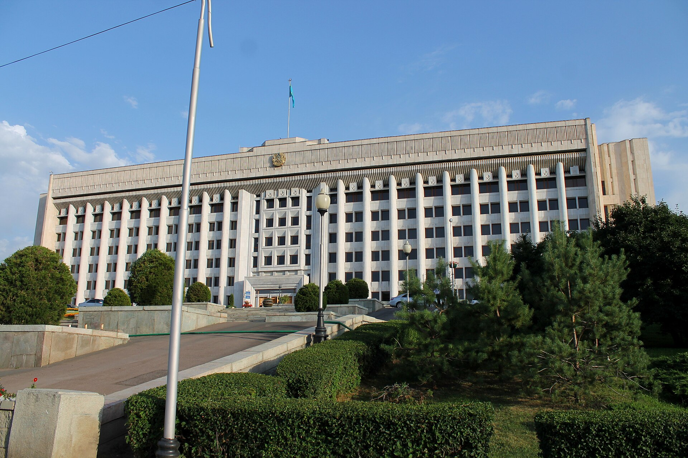

В Алматы осудили пятерых активистов: 5–5,5 года по делу о «попытке захвата Акорды»
Алмалинский районный суд вынес приговор 8 сентября. Прокурор просил по восемь лет каждому; процесс шёл за закрытыми дверями.

8 сентября 2026 года Алмалинский районный суд по уголовным делам Алматы признал виновными пятерых гражданских активистов и назначил им сроки лишения свободы.
По данным изданий «Власть» и «Фергана», Кайсар Озбек и Талгат Аширов получили по 5,5 года, а Аскар Нурмаган, Абдуали Тагай и Дуйсенбек Жакашев — по пять лет.
На процессе прокурор запрашивал для каждого из подсудимых по восемь лет с отбыванием наказания в учреждении средней безопасности.
Позиция обвинения
Согласно обвинительному заключению, подсудимые с января по июнь 2025 года тайно собирались и создали в WhatsApp группу под названием «Кайрат Team».
Прокуратура обвинила их в подготовке массовых беспорядков в Астане с целью захвата власти и президентской резиденции — Акорды.
Суд признал всех пятерых виновными по статьям:
- пропаганда насильственного захвата или удержания власти, совершённая группой
- подготовка и организация массовых беспорядков, сопряжённых с насилием, уничтожением имущества и сопротивлением представителям власти
Кайсару Озбеку и Талгату Аширову дополнительно вменялось незаконное приобретение, хранение и перевозка взрывчатых веществ группой лиц.
Позиция защиты
На старте процесса в феврале все пятеро подсудимых не признали вину ни по одному из обвинений.
Заседания проходили в закрытом режиме. Прокуратура объясняла это безопасностью свидетелей; адвокаты критиковали отсутствие гласности.
Они не хотят гласности. Быстренько хотят закрыть всех без шума и пыли.
— Жанара Балгабаева, адвокат защиты («Власть», «Фергана», сентябрь 2026)
Адвокаты двоих подсудимых сообщили Радио «Азаттык», что спецслужбы использовали людей, которые делали вид, что разделяют взгляды активистов, и провоцировали их на правонарушения. Суд эти доводы не принял.
В цифрах
- Дата приговора: 8 сентября 2026 года
- Суд: Алмалинский районный суд по уголовным делам Алматы
- Подсудимые: 5 человек
- Кайсар Озбек — 5,5 года; Талгат Аширов — 5,5 года
- Аскар Нурмаган, Абдуали Тагай, Дуйсенбек Жакашев — по 5 лет
- Запрос прокурора: по 8 лет каждому
- Период по обвинению: январь–июнь 2025 года
- Обвинение по взрывчатым веществам: 2 человека
Реакция
Дело привлекло внимание правозащитных организаций и активистов. По данным The Diplomat, после приговора правозащитники выступили с заявлениями.
Часть осуждённых ранее участвовала в различных гражданских протестах в стране.
Фон
Это не единственное дело о «попытке захвата власти» в Казахстане. В апреле 2026 года были осуждены 19 активистов за мирную акцию, посвящённую ситуации в Синьцзяне; тот приговор критиковали Amnesty International и Human Rights Watch.
Казахстанские официальные лица рассматривают такие дела как уголовные процессы, проведённые в соответствии с законом. Приговор может быть обжалован в вышестоящей инстанции; информации об апелляции не публиковалось.